myTaskPanel
Task panels for Clarion: the column of collapsible groups down the side of a window — Catalogs, Reports, Exports, Help — each a card of clickable items, with submenus nested as deep as you like. Dock it left or right, or let it float; the user drags it between the three. Copy the frame's own menu into it with one checkbox, or fill it a whole group at a time from presets and delete what you do not want. Two engines from one setting: pure Clarion source, or DirectX (Direct2D + DirectWrite).
Paneles de tareas para Clarion: la columna de grupos plegables al costado de una ventana — Catálogos, Informes, Exportar, Ayuda — cada uno una tarjeta de elementos con clic, con submenús anidados a la profundidad que quiera. Se acopla a la izquierda o a la derecha, o flota; el usuario lo arrastra entre las tres posiciones. Copie el menú del marco con una casilla, o llénelo un grupo entero a la vez con grupos predefinidos y borre lo que no quiera. Dos motores con un solo ajuste: código Clarion puro o DirectX (Direct2D + DirectWrite).
no DLL · no OCX · Clarion or DirectX · MDI frames and windows · presets · menu copy · EN / ES sin DLL · sin OCX · Clarion o DirectX · marcos MDI y ventanas · predefinidos · copia del menú · EN / ESOverview
Two templates and one class. Add myTaskPanelGlobal to the application once, add the myTaskPanel extension to the frame (or to any window), and fill in its groups.
- Groups and items — each group is a card with a header the user clicks to open or close it. An item's level puts it in the submenu of the item above it, so submenus nest without nested lists.
- Presets — Catalogs, Operations, Reports, Exports, Tools, Window, Help, Quick links, Settings, plus groups built from this application's browses and reports, and an editable copy of the window's menu. Each press adds a new, filled-in group.
- The system menu, copied — at run time, every top menu of the window's MENUBAR becomes a group (or one "Menu" group), three levels deep and more, with the shortcut keys shown. A copied row presses the original menu item, so the menu's own code runs and nothing has to be redeclared.
- Docking — left, right or floating. On an MDI frame the MDI area gets narrower; on a window the window grows by the panel's width and its form moves over intact.
- Two engines — a Clarion engine that is nothing but Clarion source (GDI through the Windows API), and a DirectX engine compiled into the program by Clarion's own C compiler. Same API; DirectX adds soft shadows, glass headers, hover highlights that fade, and a floating panel that turns see-through.
myTaskPanel.tpl the two templates
MyTaskPanel.inc / .clw MyTaskPanelClass (all Clarion)
mtpd2d.c the DirectX painter (compiled only for the DirectX engine)
examples\myTaskPanel\ the demo, its self-test, the generator harnesses
Resumen
Dos plantillas y una clase. Agregue myTaskPanelGlobal a la aplicación una vez, agregue la extensión myTaskPanel al marco (o a cualquier ventana) y llene sus grupos.
- Grupos y elementos — cada grupo es una tarjeta con un encabezado que el usuario pulsa para abrirlo o cerrarlo. El nivel de un elemento lo pone en el submenú del elemento de arriba, así los submenús se anidan sin listas anidadas.
- Grupos predefinidos — Catálogos, Operaciones, Informes, Exportar, Herramientas, Ventana, Ayuda, Accesos rápidos, Configuración, más grupos armados con los browses e informes de esta aplicación, y una copia editable del menú de la ventana. Cada pulsación agrega un grupo nuevo ya lleno.
- El menú del sistema, copiado — en ejecución, cada menú del MENUBAR se vuelve un grupo (o un solo grupo "Menú"), con tres niveles y más, y las teclas rápidas a la vista. Una fila copiada pulsa el elemento de menú original, así corre el código del propio menú y no hay que volver a declarar nada.
- Acoplar — izquierda, derecha o flotante. En un marco MDI el área MDI se angosta; en una ventana la ventana crece el ancho del panel y su formulario se corre intacto.
- Dos motores — un motor Clarion que es solo código Clarion (GDI por la API de Windows) y un motor DirectX compilado dentro del programa por el compilador C de Clarion. La misma API; DirectX agrega sombras suaves, encabezados de vidrio, resaltados que se desvanecen y un panel flotante que se vuelve translúcido.
myTaskPanel.tpl las dos plantillas
MyTaskPanel.inc / .clw MyTaskPanelClass (todo Clarion)
mtpd2d.c el pintor DirectX (solo se compila con el motor DirectX)
examples\myTaskPanel\ la demo, su autoprueba, los arneses del generador
What it looks like
Every picture is the demo program, captured from the screen. The panel on the left of an MDI frame, docked under the toolbar and above the status bar, with two MDI browses open beside it:
Cómo se ve
Cada imagen es el programa de demostración, capturado de la pantalla. El panel a la izquierda de un marco MDI, acoplado bajo la barra de herramientas y sobre la barra de estado, con dos browses MDI abiertos al lado:
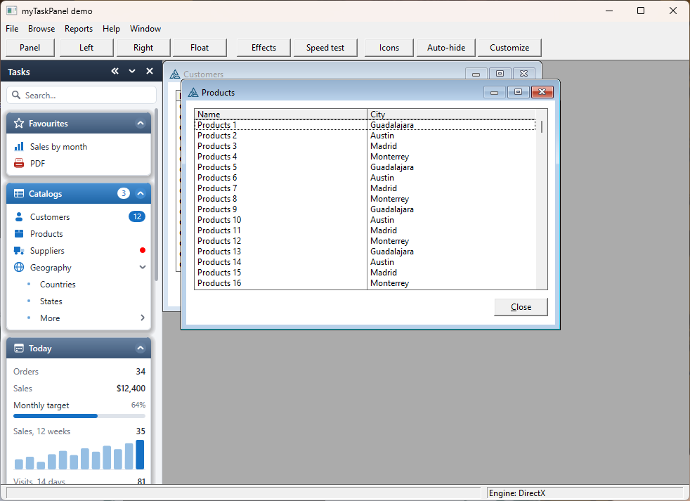
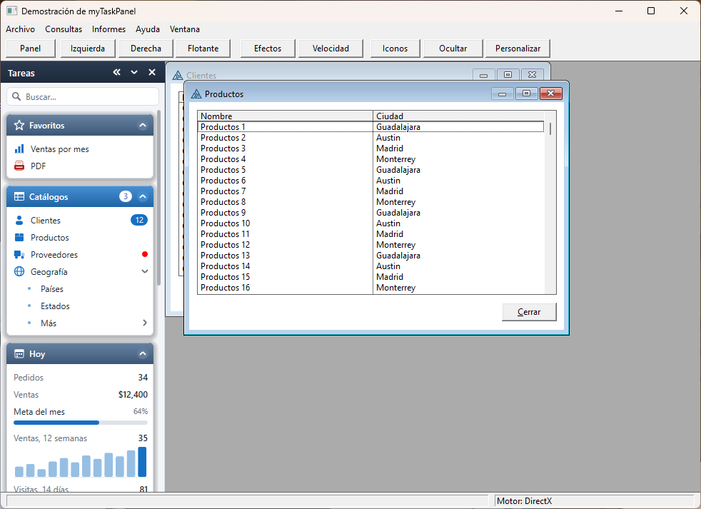
The two engines
The same panel drawn by each engine, the mouse on Customers.
The layout, colours and icons are the same; DirectX adds what GDI cannot draw: a soft shadow under each card,
a glass light on the headers, and a translucent hover wash that fades in and out. The badge in the corner
(ShowEngine) says which engine painted the frame.
Los dos motores
El mismo panel dibujado por cada motor, con el ratón sobre Clientes.
El diseño, los colores y los iconos son los mismos; DirectX agrega lo que GDI no puede dibujar: una sombra suave
bajo cada tarjeta, un brillo de vidrio en los encabezados y un resaltado translúcido que aparece y se desvanece.
La insignia de la esquina (ShowEngine) dice qué motor pintó el cuadro.
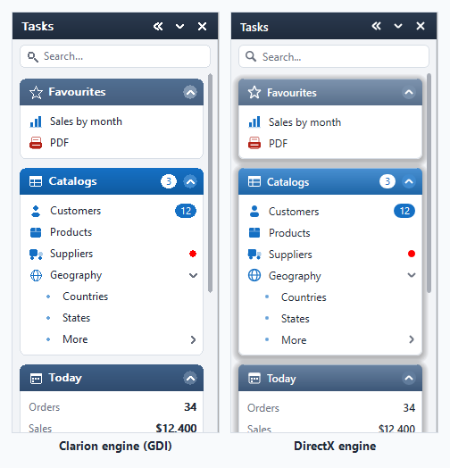
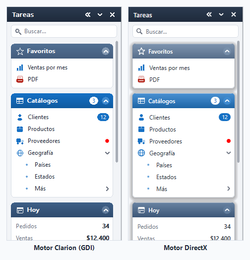
Six of the eighteen themes
Seis de los dieciocho temas
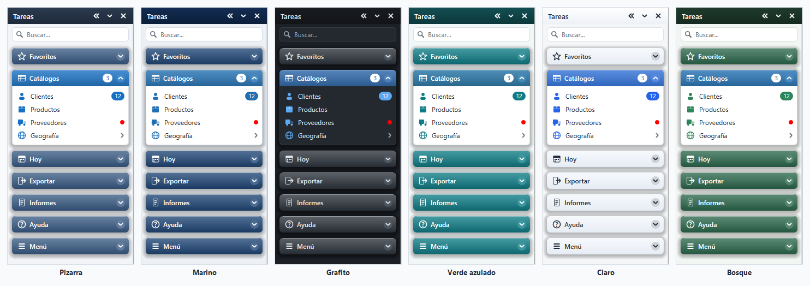
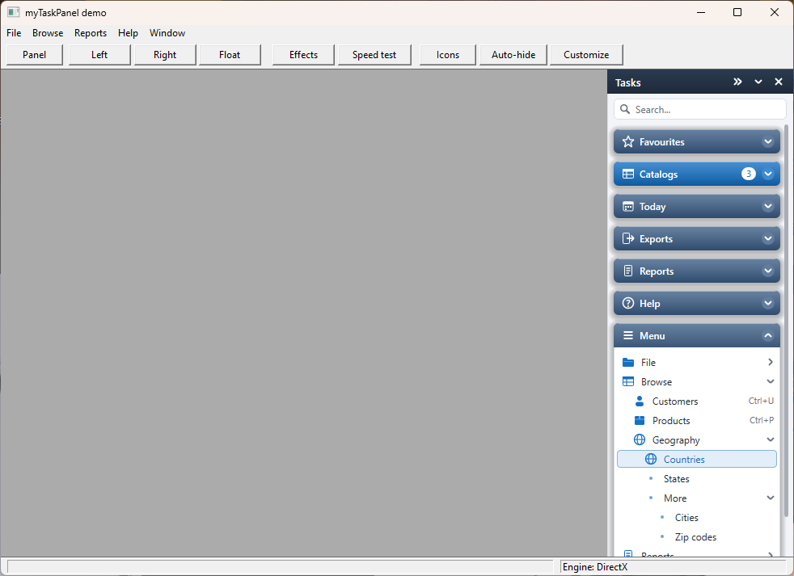
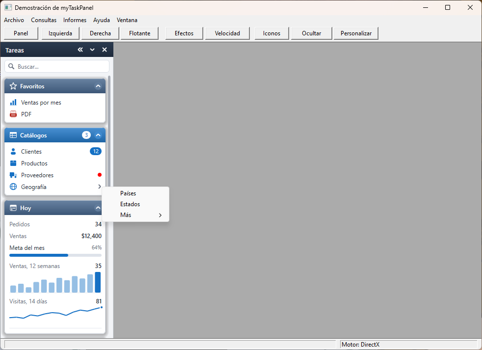
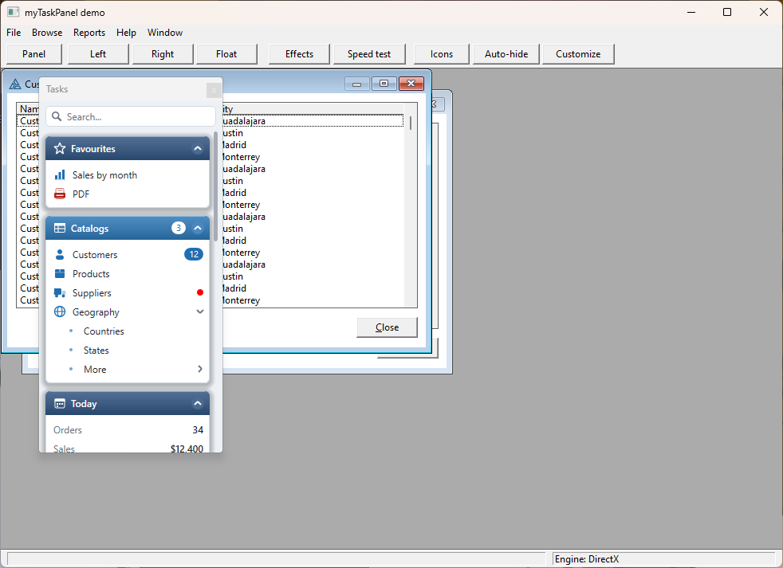
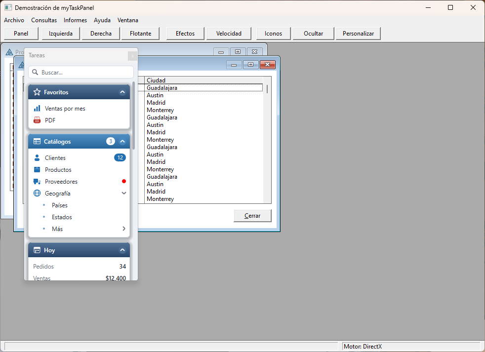
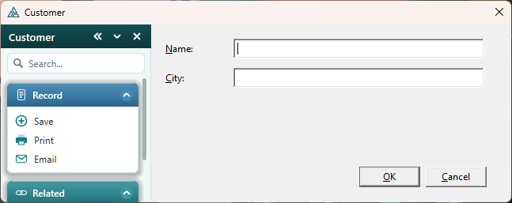

The demo
examples\myTaskPanel\TaskPanelDemo.clw is the hand-coded equivalent of what the template
generates, each call marked with the embed point the template emits it at. build.sh builds two
programs from it: TaskPanelDemo.exe (the Clarion engine, no C compiled) and
TaskPanelDemoDX.exe (the DirectX engine, _MTP_D2D_=>1).
| Argument | Effect |
|---|---|
engine=gdi / engine=dx | force an engine; with neither, TaskPanelDemoDX draws with DirectX and TaskPanelDemo with GDI |
dock=left|right|float | where it starts |
theme=1..18 | Slate, Navy, Graphite, Teal, Light, Forest, High contrast, Low contrast, Ocean, Crimson, Amber, Copper, Sky, Mint, Steel, Sand, Midnight, Olive - the starting theme; the toolbar's Theme button (and the Theme button on the win form) switches it live, and open browses' panels follow |
sub=flyout | submenus as pop-up menus |
open=all|none|first|menu | which groups start open |
lang=es | Spanish, including the frame's own menu |
child | opens two MDI browses |
win | the panel on an ordinary window instead of the frame |
search=text · keys | give the panel the keyboard, with that text typed into the search / without |
custom · hidden | start in Customize mode / with Suppliers hidden as a user would; the toolbar's Customize button switches the mode |
rail · autohide · open=today | start as the icon rail / tucked into the edge / with only the info cards open; the toolbar's Icons and Auto-hide buttons switch them live |
auto | runs the self-test (see How it was verified) and exits |
fx=off | DirectX without the effects (the toolbar's Effects button toggles them live) |
badge=off | hides the engine badge |
bench | times both engines (see Speed), writes TaskPanelBench.ini and exits; the toolbar's Speed test button shows the same in a window |
diag | where a DirectX frame's time goes (Direct2D target type, empty frames, brush cache): TaskPanelDiag.ini, then exits |
shots.ps1 regenerates every picture on this page in both languages.
La demo
examples\myTaskPanel\TaskPanelDemo.clw es el equivalente escrito a mano de lo que genera la
plantilla, con cada llamada marcada con el punto de embed donde la emite la plantilla. build.sh
compila dos programas: TaskPanelDemo.exe (motor Clarion, sin C) y TaskPanelDemoDX.exe
(motor DirectX, _MTP_D2D_=>1).
| Argumento | Efecto |
|---|---|
engine=gdi / engine=dx | forzar un motor; sin ninguno, TaskPanelDemoDX dibuja con DirectX y TaskPanelDemo con GDI |
dock=left|right|float | dónde empieza |
theme=1..18 | Pizarra, Marino, Grafito, Verde azulado, Claro, Bosque, Alto contraste, Bajo contraste, Océano, Carmesí, Ámbar, Cobre, Cielo, Menta, Acero, Arena, Medianoche, Oliva - el tema inicial; el botón Tema de la barra (y el del formulario win) lo cambia en vivo, y los paneles de las consultas abiertas lo siguen |
sub=flyout | submenús como menús emergentes |
open=all|none|first|menu | qué grupos empiezan abiertos |
lang=es | en español, incluido el menú del marco |
child | abre dos browses MDI |
win | el panel en una ventana común en lugar del marco |
search=texto · keys | darle el teclado al panel, con ese texto escrito en la búsqueda / sin él |
custom · hidden | empezar en modo Personalizar / con Proveedores oculto como lo haría un usuario; el botón Personalizar cambia el modo |
rail · autohide · open=today | empezar como riel de iconos / guardado en el borde / con solo las tarjetas abiertas; los botones Iconos y Ocultar de la barra los cambian en vivo |
auto | corre la autoprueba (ver Cómo se verificó) y sale |
fx=off | DirectX sin los efectos (el botón Efectos de la barra los activa y desactiva en vivo) |
badge=off | oculta la insignia del motor |
bench | mide los dos motores (vea Velocidad), escribe TaskPanelBench.ini y sale; el botón Velocidad de la barra muestra lo mismo en una ventana |
diag | en qué se va el tiempo de un cuadro DirectX (tipo de destino Direct2D, cuadros vacíos, caché de pinceles): TaskPanelDiag.ini, y sale |
shots.ps1 regenera cada imagen de esta página en los dos idiomas.
Install & register
- Copy
MyTaskPanel.inc,MyTaskPanel.clwandmtpd2d.ctoaccessory\libsrc\win, andmyTaskPanel.tpltoaccessory\template\win. - Register the template: Setup → Template Registry → Register, or
ClarionCL -tr C:\Clarion…\accessory\template\win\myTaskPanel.tpl. - Restart the IDE — an open IDE keeps the template registry it read at start-up.
Instalar y registrar
- Copie
MyTaskPanel.inc,MyTaskPanel.clwymtpd2d.caaccessory\libsrc\win, ymyTaskPanel.tplaaccessory\template\win. - Registre la plantilla: Setup → Template Registry → Register, o
ClarionCL -tr C:\Clarion…\accessory\template\win\myTaskPanel.tpl. - Reinicie el IDE — un IDE abierto conserva el registro de plantillas que leyó al iniciar.
Four steps
- Global — Global Properties → Extensions → Insert → myTaskPanelGlobal. Pick the engine and the theme.
- The extension — on the frame (or a window): Extensions → Insert → myTaskPanel.
- Groups — on the Presets tab pick Catalogs and press Add this group; do the same for Reports, Help… Then on the Groups tab rename, reorder or delete, and point the items at your procedures.
- Menu (optional) — on the Menu tab tick Copy the menu into the panel at run time.
Generate and run. Every item has its own embed point under myTaskPanel → group → item.
Cuatro pasos
- Global — Global Properties → Extensions → Insert → myTaskPanelGlobal. Elija el motor y el tema.
- La extensión — en el marco (o una ventana): Extensions → Insert → myTaskPanel.
- Grupos — en la pestaña Presets elija Catalogs y pulse Add this group; lo mismo para Reports, Help… Luego en la pestaña Groups renombre, reordene o borre, y apunte los elementos a sus procedimientos.
- Menú (opcional) — en la pestaña Menu marque Copy the menu into the panel at run time.
Genere y ejecute. Cada elemento tiene su propio punto de embed bajo myTaskPanel → grupo → elemento.
Every prompt
myTaskPanelGlobal
| Tab | Prompt | What it does |
|---|---|---|
| General | Draw the panels with | Clarion or DirectX. DirectX makes the global add
#pragma define(_MTP_D2D_=>1) to the project, which compiles mtpd2d.c in. |
| General | DirectX effects · floating panel opacity when idle | Effects (on): shadows, glass headers, fading hover. FloatOpacity (88 %): how solid a floating panel stays while the mouse is elsewhere; 100 keeps it solid. |
| General | Show which engine is painting | ShowEngine: a "DirectX" / "GDI" badge in the panel's corner. For testing. |
| Look | Theme · own accent colour | Eighteen palettes (incl. high and low contrast); the accent replaces the highlighted header and hover colour. |
| Look | Font, size, item height, header height, corner radius, animate | Copied into the object before it shows. |
| Behaviour | Language | The panel's own menu (Dock left, Float, Hide…) and the captions presets fill in. |
| Behaviour | Remember … · INI file | Dock side, width, floating rectangle and open groups, one section per procedure (TaskPanel.<procedure>). A bare file name is taken from the program's folder. |
| Multi-DLL | (ABC library prompts) | Where the class is compiled; see Multi-DLL. |
myTaskPanel (on a procedure)
| Tab | Prompt | What it does |
|---|---|---|
| General | Object name · Title | The object label (default TaskPanel) and the title strip. |
| General | Starts · Width · Starts hidden · Grow the window | Docked left / right / floating; docked width; hidden until toggled; on a window (never a frame) grow it by the panel's width. |
| General | A search box under the title | ShowSearch; see Search, keyboard, badges. |
| User | Float · Dock · Close · Resize · Show/hide key | What the user may do; the key is a Clarion key code (F12Key) alerted on the window. |
| User | Move the keyboard into it with | A key code (default F6Key, blank = none) that shows the panel if hidden and calls Focus(). |
| Groups | Groups… (caption, icon, icon file, starts open, accent header, starts hidden, show only when) | One card each. Inside, Items in this group. |
| Groups → Item | Kind · Text · Level · Icon · Icon file · Shortcut text · Tag | Item, separator or small heading label; level 0 sits in the group, 1 in the submenu of the item above; the tag is the key the generated CASE uses (blank: g<group>i<item>). |
| Groups → Action | When clicked … | See Actions. |
| Groups → State | Submenu starts open · disabled · hidden · bold | Starting state; all changeable at run time. |
| Groups → State | Show only when · Enable only when | Clarion expressions, checked at open and on every MTP:Check; see Conditions. |
| Presets | Preset · Add this group | See Presets. |
| Menu | Copy … at run time · Arrange · Put it · Skip menus named · Take the real menu off | See Copying the menu. |
| Options | Submenus · Accordion · Shortcut text · Theme | Open in place or as pop-ups; one group open at a time; show the shortcut column; override the global theme. |
| Options | Favourites · Recent items kept · Start collapsed to icons · Auto-hide | See Favourites, cards, rail, auto-hide. |
| Options | Most used kept · Description cards | MostMax (5, 0 = none); ShowTips. See Customize, buttons, drops, cards. |
| Groups → Extras | Tooltip · Accept files dropped on it · Hover buttons (icon, tip, tag, action) | See Customize, buttons, drops, cards; each button and each drop target has its own embed point. |
| Groups → Item | Kind Info / Progress / Chart · Value (expression) · Chart | Info cards; the value is re-evaluated with the conditions. An action other than Embed code only makes the card clickable. |
Cada opción
myTaskPanelGlobal
| Pestaña | Opción | Qué hace |
|---|---|---|
| General | Draw the panels with | Clarion o DirectX. DirectX hace que la global agregue
#pragma define(_MTP_D2D_=>1) al proyecto, lo que compila mtpd2d.c. |
| General | DirectX effects · Floating panel opacity when idle | Effects (activo): sombras, encabezados de vidrio, resaltado que se desvanece. FloatOpacity (88 %): qué tan sólido queda un panel flotante mientras el ratón está en otro lado; 100 lo deja sólido. |
| General | Show which engine is painting | ShowEngine: una insignia "DirectX" / "GDI" en la esquina del panel. Para pruebas. |
| Look | Tema · color de acento propio | Dieciocho paletas (con alto y bajo contraste); el acento reemplaza el color del encabezado destacado y del resaltado. |
| Look | Fuente, tamaño, alto de elemento, alto de encabezado, radio de esquinas, animación | Se copian al objeto antes de mostrarlo. |
| Behaviour | Language | El menú propio del panel (Acoplar, Flotante, Ocultar…) y los textos de los predefinidos. |
| Behaviour | Remember … · INI file | Lado, ancho, rectángulo flotante y grupos abiertos, una sección por procedimiento (TaskPanel.<procedimiento>). Un nombre sin carpeta se toma de la carpeta del programa. |
| Multi-DLL | (opciones de biblioteca ABC) | Dónde se compila la clase; ver Multi-DLL. |
myTaskPanel (en un procedimiento)
| Pestaña | Opción | Qué hace |
|---|---|---|
| General | Object name · Title | La etiqueta del objeto (por omisión TaskPanel) y la franja de título. |
| General | Starts · Width · Starts hidden · Grow the window | Acoplado izquierda / derecha / flotante; ancho; oculto hasta alternarlo; en una ventana (nunca un marco) la agranda el ancho del panel. |
| General | A search box under the title | ShowSearch; ver Búsqueda, teclado, insignias. |
| User | Float · Dock · Close · Resize · tecla | Qué puede hacer el usuario; la tecla es un código de Clarion (F12Key) alertado en la ventana. |
| User | Move the keyboard into it with | Un código de tecla (por omisión F6Key, vacío = ninguno) que muestra el panel si está oculto y llama a Focus(). |
| Groups | Groups… (título, icono, archivo de icono, abierto, encabezado destacado, oculto, mostrar solo si) | Una tarjeta cada uno. Adentro, Items in this group. |
| Groups → Item | Kind · Text · Level · Icon · Icon file · Shortcut text · Tag | Elemento, separador o rótulo; nivel 0 va en el grupo, 1 en el submenú del de arriba; la etiqueta es la clave del CASE generado (vacía: g<grupo>i<elemento>). |
| Groups → Action | When clicked … | Ver Acciones. |
| Groups → State | submenú abierto · deshabilitado · oculto · negrita | Estado inicial; todo cambia en ejecución. |
| Groups → State | Show only when · Enable only when | Expresiones Clarion, evaluadas al abrir y en cada MTP:Check; ver Condiciones. |
| Presets | Preset · Add this group | Ver Grupos predefinidos. |
| Menu | Copiar en ejecución · Arrange · Put it · Skip menus named · quitar el menú real | Ver Copiar el menú. |
| Options | Submenus · Accordion · Shortcut text · Theme | En el lugar o emergentes; un grupo abierto a la vez; columna de teclas; reemplazar el tema global. |
| Options | Favourites · Recent items kept · Start collapsed to icons · Auto-hide | Ver Favoritos, tarjetas, riel, ocultar. |
| Options | Most used kept · Description cards | MostMax (5, 0 = ninguno); ShowTips. Ver Personalizar, botones, soltar, fichas. |
| Groups → Extras | Tooltip · Accept files dropped on it · Hover buttons (icono, consejo, etiqueta, acción) | Ver Personalizar, botones, soltar, fichas; cada botón y cada destino tiene su punto de embed. |
| Groups → Item | Kind Info / Progress / Chart · Value (expression) · Chart | Tarjetas de datos; el valor se reevalúa con las condiciones. Una acción distinta de Embed code only hace la tarjeta pulsable. |
Groups, items, submenus
Items are one flat list per group. The Level column builds the tree: an item at level n goes in the submenu of the nearest item above it at level n−1. An item that has children is a submenu — clicking it opens it (in place, or as a pop-up menu) and it raises no click of its own.
Customers level 0 Geography level 0 - has children: a submenu Countries level 1 More level 1 - a sub-submenu Cities level 2
The generator keeps the last item id of each level in TaskPanel:L[] and passes the right one as
the parent, so the list above becomes:
TaskPanel:G = TaskPanel.AddGroup('Catalogs', 'table', 1, 1) TaskPanel:L[1] = TaskPanel.AddItem(TaskPanel:G, 'Customers', 'user', 'g1i1') TaskPanel:L[1] = TaskPanel.AddItem(TaskPanel:G, 'Geography', 'globe', 'g1i2') TaskPanel:L[2] = TaskPanel.AddItem(TaskPanel:L[1], 'Countries', '', 'g1i3') TaskPanel:L[2] = TaskPanel.AddItem(TaskPanel:L[1], 'More', '', 'g1i4') TaskPanel:L[3] = TaskPanel.AddItem(TaskPanel:L[2], 'Cities', '', 'g1i5')
Separators draw a thin rule; labels a small grey heading in capitals ("RECENT"). Neither is clickable.
Grupos, elementos, submenús
Los elementos son una lista plana por grupo. La columna Level arma el árbol: un elemento de nivel n va en el submenú del elemento más cercano de arriba con nivel n−1. Un elemento con hijos es un submenú — al pulsarlo se abre (en el lugar o como menú emergente) y no produce un clic propio.
Clientes nivel 0 Geografía nivel 0 - tiene hijos: un submenú Países nivel 1 Más nivel 1 - un sub-submenú Ciudades nivel 2
El generador guarda el último id de cada nivel en TaskPanel:L[] y pasa el correcto como padre:
TaskPanel:G = TaskPanel.AddGroup('Catálogos', 'table', 1, 1) TaskPanel:L[1] = TaskPanel.AddItem(TaskPanel:G, 'Clientes', 'user', 'g1i1') TaskPanel:L[1] = TaskPanel.AddItem(TaskPanel:G, 'Geografía', 'globe', 'g1i2') TaskPanel:L[2] = TaskPanel.AddItem(TaskPanel:L[1], 'Países', '', 'g1i3') TaskPanel:L[2] = TaskPanel.AddItem(TaskPanel:L[1], 'Más', '', 'g1i4') TaskPanel:L[3] = TaskPanel.AddItem(TaskPanel:L[2], 'Ciudades', '', 'g1i5')
Los separadores dibujan una línea fina; los rótulos un título gris pequeño en mayúsculas ("RECIENTES"). Ninguno recibe clics.
Presets
Pick a preset on the Presets tab and press Add this group: a new group appears on the Groups tab, already filled in. Nothing about it is special afterwards — rename, reorder, delete items, set the procedures. Press again for another group.
| Preset | What it adds |
|---|---|
| Catalogs | Customers, Suppliers, Products, Categories, Employees, Geography › Countries / States / Cities — accent header, Start a procedure (fill in the procedures) |
| Operations | New invoice, Invoices, Orders, Payments, Purchases, Inventory movements |
| Reports | Sales by month, Customer list, Inventory, Financial › Balance sheet / Income statement / Cash flow |
| Exports | Excel (.xlsx), CSV, PDF, HTML, —, XML, JSON, Text — Embed code only (pair them with your export code, or myExport) |
| Tools and utilities | Back up, Restore, Import data, Rebuild indexes, —, Options |
| Window | Tile side by side, Tile stacked, Cascade, Arrange icons — Window command, works as is |
| Help | Contents, Search the help, What's new, Check for updates, —, Website, Email support, About… |
| Quick links | Home page, Documentation (URLs), Calendar |
| Settings and security | Options, Users, Change password, Lock, —, Log out (Close the window) |
| Catalogs from this application's browses | One item per procedure whose name starts with Browse or whose description contains it; each starts the procedure on its own thread |
| Reports from this application's reports | The same for Report procedures, names starting Print/Report, or descriptions containing report |
| This window's menu, as editable groups | The MENUBAR copied now: one group per top menu, nested menus as levels, separators kept; every item set to Press a control or menu item on the original |
URLs in the presets point at example.com — replace them.
Grupos predefinidos
Elija uno en la pestaña Presets y pulse Add this group: aparece un grupo nuevo en la pestaña Groups, ya lleno. Después no tiene nada especial — renombre, reordene, borre elementos, ponga los procedimientos. Pulse otra vez para otro grupo.
| Predefinido | Qué agrega |
|---|---|
| Catalogs | Clientes, Proveedores, Productos, Categorías, Empleados, Geografía › Países / Estados / Ciudades — encabezado destacado, Start a procedure (complete los procedimientos) |
| Operations | Nueva factura, Facturas, Pedidos, Pagos, Compras, Movimientos de inventario |
| Reports | Ventas por mes, Lista de clientes, Inventario, Financieros › Balance general / Estado de resultados / Flujo de efectivo |
| Exports | Excel (.xlsx), CSV, PDF, HTML, —, XML, JSON, Texto — Embed code only (combínelos con su código de exportación, o myExport) |
| Tools and utilities | Respaldar, Restaurar, Importar datos, Reconstruir índices, —, Opciones |
| Window | Mosaico vertical, Mosaico horizontal, Cascada, Organizar iconos — Window command, funciona tal cual |
| Help | Contenido, Buscar en la ayuda, Novedades, Buscar actualizaciones, —, Sitio web, Escribir a soporte, Acerca de… |
| Quick links | Página principal, Documentación (URL), Calendario |
| Settings and security | Opciones, Usuarios, Cambiar la contraseña, Bloquear, —, Cerrar sesión (Close the window) |
| Catalogs from this application's browses | Un elemento por procedimiento cuyo nombre empieza con Browse o cuya descripción lo contiene; cada uno inicia el procedimiento en su propio hilo |
| Reports from this application's reports | Lo mismo con procedimientos Report, nombres que empiezan con Print/Report o descripciones con report |
| This window's menu, as editable groups | El MENUBAR copiado ahora: un grupo por menú, los menús anidados como niveles, separadores incluidos; cada elemento con Press a control or menu item sobre el original |
Las URL de los predefinidos apuntan a example.com — reemplácelas.
Actions
| When clicked | Generated | Notes |
|---|---|---|
| Start a procedure | START(Proc, 25000) | The usual choice on a frame. The procedure joins the call tree by itself. |
| Call a procedure | Proc(parameters) | Not for an MDI procedure from a frame — Clarion requires those on their own thread. |
| Insert a record (a form) | START(TaskPanelInsert2_8, 25000) and, among the procedure's local procedures,TaskPanelInsert2_8 PROCEDURE GlobalRequest = InsertRecord UpdateCustomers() | Opens the update form to add a record — MDI or not. An MDI form cannot open on the frame's thread, and GlobalRequest is THREADed, so the request is set by a small generated procedure on the new thread, which then calls the form. Also a hover button's action: an item with a + that opens its form to insert. |
| Press a control or menu item | (the item carries the control's equate) | NextClick posts EVENT:Accepted to it and moves on; the item's own embed does not run. |
| Post an event | POST(EVENT:…) | |
| Open a URL or file | TaskPanel.OpenUrl('…') | ShellExecute "open": web pages, mailto:, documents. |
| Run a program | RUN('…') | |
| Window command | TaskPanel.MdiCommand(MTP:TileV) | Tile vertically / horizontally, Cascade, Arrange icons — sent to the frame's MDI client. |
| Close the window | POST(EVENT:CloseWindow) | |
| Embed code only | — | Write it in the item's embed. |
Whatever the action, the item's embed point runs straight after it.
Acciones
| Al pulsar | Se genera | Notas |
|---|---|---|
| Start a procedure | START(Proc, 25000) | Lo habitual en un marco. El procedimiento entra solo al árbol de llamadas. |
| Call a procedure | Proc(parámetros) | No para un procedimiento MDI desde un marco — Clarion los exige en su propio hilo. |
| Insert a record (a form) | START(TaskPanelInsert2_8, 25000) y, entre los procedimientos locales,TaskPanelInsert2_8 PROCEDURE GlobalRequest = InsertRecord UpdateClientes() | Abre el formulario para agregar un registro — MDI o no. Un formulario MDI no puede abrirse en el hilo del marco, y GlobalRequest es THREAD, así que la petición la pone un pequeño procedimiento generado en el hilo nuevo, que luego llama al formulario. También es una acción de los botones al pasar: un elemento con un + que abre su formulario para insertar. |
| Press a control or menu item | (el elemento lleva el equate del control) | NextClick le envía EVENT:Accepted y sigue; el embed del elemento no corre. |
| Post an event | POST(EVENT:…) | |
| Open a URL or file | TaskPanel.OpenUrl('…') | ShellExecute "open": páginas web, mailto:, documentos. |
| Run a program | RUN('…') | |
| Window command | TaskPanel.MdiCommand(MTP:TileV) | Mosaico vertical / horizontal, Cascada, Organizar iconos — al cliente MDI del marco. |
| Close the window | POST(EVENT:CloseWindow) | |
| Embed code only | — | Escríbalo en el embed del elemento. |
Sea cual sea la acción, el embed del elemento corre justo después.
Docking and floating
| The user… | What happens |
|---|---|
| drags the title strip of a docked panel | after 6 pixels it becomes a floating window under the mouse and keeps moving with it |
| drops a floating panel within 44 pixels of the host's left or right edge | it docks there; while dragging, its caption says Release to dock on the left |
| drags the inner edge | resizes it (150–560 pixels, MinWidth/MaxWidth); the MDI area follows live |
| clicks ⌄ or right-clicks | Dock on the left / Dock on the right / Float / Expand all / Collapse all / Hide the panel |
| clicks × (or the floating window's ×) | hides it; the show/hide key or ShowPanel brings it back |
| turns the mouse wheel | scrolls; a thin scroll thumb appears when the groups do not fit, and can be dragged |
On an MDI frame the panel sits between the toolbar and the status bar and the MDI client is narrowed. On a window the window's client area is narrowed and, with Grow the window, the window gets wider by the panel's width, so the form moves over intact; floating or hiding gives the width back.
Acoplar y flotar
| El usuario… | Qué pasa |
|---|---|
| arrastra la franja de título de un panel acoplado | a los 6 píxeles se vuelve una ventana flotante bajo el mouse y sigue moviéndose con él |
| suelta un panel flotante a menos de 44 píxeles del borde izquierdo o derecho | se acopla ahí; mientras se arrastra, su título dice Suelte para acoplar a la izquierda |
| arrastra el borde interior | cambia el ancho (150–560 píxeles, MinWidth/MaxWidth); el área MDI lo sigue en vivo |
| pulsa ⌄ o clic derecho | Acoplar a la izquierda / a la derecha / Flotante / Expandir todo / Contraer todo / Ocultar el panel |
| pulsa × (o la × de la ventana flotante) | lo oculta; la tecla o ShowPanel lo traen de vuelta |
| gira la rueda del mouse | desplaza; cuando los grupos no caben aparece una barra fina que también se arrastra |
En un marco MDI el panel queda entre la barra de herramientas y la de estado, y el cliente MDI se angosta. En una ventana el área cliente se angosta y, con Grow the window, la ventana se ensancha el ancho del panel, así el formulario se corre intacto; flotar u ocultar devuelve el ancho.
Themes and icons
Eighteen palettes, all without purple: Slate (default), Navy, Graphite (dark), Teal,
Light, Forest; ten more colours — Ocean, Crimson, Amber, Copper,
Sky, Mint, Steel, Sand, Midnight (dark), Olive, each with white header text
at 4.5:1 or better; and two for accessibility — High contrast (black, white and yellow, strong borders) and
Low contrast (soft greys, easy on the eyes). SetAccent(color) replaces the highlighted header and the hover text;
every colour is also a public property (ClrHead1, ClrCard, ClrHover…) you
can set before ShowPanel.
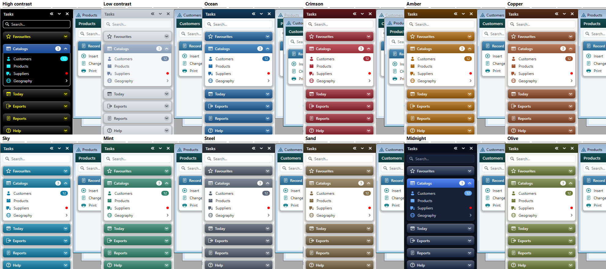
Icons are built-in vector glyphs, drawn with the painter, so they are sharp at any DPI and look the same
in both engines. Or name an .ico file — a path on disk, or an icon linked into the program
(Clarion files those by upper-case name, e.g. SAVE.ICO).
folder table user users box doc report chart export import excel csv pdf html xml json txt print mail help info book globe gear tools backup restore key lock exit home star window tile cascade calendar money cart truck search plus link menu bell phone
auto (in the template) guesses one from the caption, in English and Spanish — Print gets the printer, Clientes the person, Ayuda the help ring. Copied menus use it too.
Temas e iconos
Dieciocho paletas, todas sin violeta: Pizarra (por omisión), Marino, Grafito (oscuro),
Verde azulado, Claro, Bosque; diez colores más — Océano, Carmesí,
Ámbar, Cobre, Cielo, Menta, Acero, Arena, Medianoche (oscuro),
Oliva, todos con el texto blanco del encabezado a 4.5:1 o más; y dos de accesibilidad — Alto contraste
(negro, blanco y amarillo, bordes marcados) y Bajo contraste (grises suaves, descansa la vista).
SetAccent(color) reemplaza el encabezado destacado y
el texto resaltado; cada color es también una propiedad pública (ClrHead1, ClrCard,
ClrHover…) que puede asignar antes de ShowPanel.
Los iconos son glifos vectoriales incluidos, dibujados con el pintor: nítidos con cualquier DPI e iguales en
los dos motores. O indique un archivo .ico — una ruta en disco, o un icono enlazado al programa
(Clarion los archiva por el nombre en mayúsculas, p. ej. SAVE.ICO).
folder table user users box doc report chart export import excel csv pdf html xml json txt print mail help info book globe gear tools backup restore key lock exit home star window tile cascade calendar money cart truck search plus link menu bell phone
auto (en la plantilla) deduce uno del texto, en inglés y en español — Imprimir recibe la impresora, Clientes la persona, Ayuda el aro de ayuda. Los menús copiados también lo usan.
The two engines
| Clarion | DirectX | |
|---|---|---|
| Source | Clarion only — GDI called through the Windows API | mtpd2d.c, compiled by Clarion's C compiler; COM vtables hand-declared (Clacpp has no DirectX headers) |
| Antialiasing | no | yes, shapes and ClearType text |
| Gradients | one band per pixel row (no msimg32) | linear gradient brush |
| Long text | DrawText … DT_END_ELLIPSIS | DirectWrite ellipsis trimming sign |
| Card shadows | no | soft, deeper on a dark theme (Effects) |
| Headers | gradient | gradient + a glass light and a bright top edge (Effects) |
| Hover | a solid highlight, on or off | a translucent accent wash that fades in (~75 ms) and out (Effects) |
| Floating panel | always solid | see-through (FloatOpacity) while the mouse is elsewhere (Effects) |
| Switched on by | default | the project define _MTP_D2D_=>1 (the global writes it) |
Both paint into the same memory DC: Direct2D draws through an ID2D1DCRenderTarget bound to it,
icons are added by GDI after EndDraw, and one BitBlt puts the frame on screen — so
there is no flicker in either. If Direct2D will not start, or EndDraw loses the device, the panel
quietly paints that frame with GDI; EngineInUse() says which engine is drawing.
MyTaskPanel.clw sits in a COMPILE('ENDD2D',_MTP_D2D_) block, the
PRAGMA('compile(mtpd2d.c)') included — the Clarion-engine demo is 23 KB smaller.Speed
Benchmark(engine, frames, effects) paints the panel off screen, at its own size and contents, the
same steps as a real repaint (layout, drawing, icons; not the final blit, which costs both the same), and
returns milliseconds per frame. The demo's Speed test runs it three rounds, alternating, best of each,
300 frames a round. Measured on the demo frame (230 px wide panel, 100 % scaling):
| Panel | Clarion (GDI) | DirectX, no effects | DirectX with effects |
|---|---|---|---|
| docked, default groups | 2.03 ms | 1.74 ms (−14 %) | 1.86 ms (−8 %) |
| floating | 1.83 ms | 1.64 ms | 1.77 ms |
| every group open | 2.80 ms | 2.33 ms | 2.42 ms |
| Graphite (dark) | 2.02 ms | 1.73 ms | 1.86 ms |
DirectX is the faster engine, even with the effects on. It was not at first: the first version was
about 20 % slower than GDI flat and 40 % slower with the effects. The demo's diag switch
(Diag() in the class) found out why:
| DirectX frame | Let Direct2D choose | Software (CPU) | Hardware (GPU) |
|---|---|---|---|
| empty frame: begin + end, nothing drawn | 0.95 ms | 0.30 ms | 0.94 ms |
| full, a new gradient brush per call | 2.45 / 2.91 ms | 2.44 / 3.03 ms | 2.47 / 2.93 ms |
| full, gradient brushes cached | 1.75 / 1.86 ms | 1.70 / 1.88 ms | 1.80 / 1.91 ms |
(flat / with effects.) Making a gradient brush is expensive in Direct2D — it is a device resource with its own stop collection — and every header asked for two, and the glass effect for one more. Keeping the last sixteen brushes by colour pair and only moving their end points cut a frame by 0.7 ms flat and 1 ms with the effects; the picture is pixel-for-pixel the same. Direct2D chooses the GPU on its own (the first and last columns match): an empty frame then costs about 0.95 ms, mostly handing the finished frame back to the memory DC. The CPU renderer has a third of that fixed cost but draws more slowly, and comes out the same.
Los dos motores
| Clarion | DirectX | |
|---|---|---|
| Código | solo Clarion — GDI por la API de Windows | mtpd2d.c, compilado por el compilador C de Clarion; vtables COM declaradas a mano (Clacpp no trae cabeceras de DirectX) |
| Antialiasing | no | sí, formas y texto ClearType |
| Degradados | una banda por fila de píxeles (sin msimg32) | pincel de degradado lineal |
| Texto largo | DrawText … DT_END_ELLIPSIS | recorte con puntos suspensivos de DirectWrite |
| Sombras | no | suaves, más profundas en un tema oscuro (Effects) |
| Encabezados | degradado | degradado + brillo de vidrio y un borde superior claro (Effects) |
| Resaltado | sólido, encendido o apagado | un velo translúcido del color de acento que aparece (~75 ms) y se desvanece (Effects) |
| Panel flotante | siempre sólido | translúcido (FloatOpacity) mientras el ratón está en otro lado (Effects) |
| Se activa con | por omisión | la definición de proyecto _MTP_D2D_=>1 (la escribe la global) |
Los dos pintan en el mismo DC de memoria: Direct2D dibuja con un ID2D1DCRenderTarget enlazado a él, los
iconos los agrega GDI después de EndDraw, y un BitBlt pone el cuadro en pantalla — sin
parpadeo en ninguno. Si Direct2D no arranca, o EndDraw pierde el dispositivo, el panel pinta ese cuadro
con GDI sin avisar; EngineInUse() dice qué motor dibuja.
MyTaskPanel.clw
está en un bloque COMPILE('ENDD2D',_MTP_D2D_), incluido el PRAGMA('compile(mtpd2d.c)') —
la demo con motor Clarion pesa 23 KB menos.Velocidad
Benchmark(engine, frames, effects) pinta el panel fuera de pantalla, con su propio tamaño y contenido,
los mismos pasos que un repintado real (diseño, dibujo, iconos; no el volcado final, que cuesta lo mismo a los dos),
y devuelve milisegundos por cuadro. El botón Velocidad de la demo lo corre tres rondas, alternando, y se queda
con la mejor de cada una, 300 cuadros por ronda. Medido en el marco de la demo (panel de 230 px de ancho, escala 100 %):
| Panel | Clarion (GDI) | DirectX sin efectos | DirectX con efectos |
|---|---|---|---|
| acoplado, grupos por omisión | 2,03 ms | 1,74 ms (−14 %) | 1,86 ms (−8 %) |
| flotante | 1,83 ms | 1,64 ms | 1,77 ms |
| todos los grupos abiertos | 2,80 ms | 2,33 ms | 2,42 ms |
| Grafito (oscuro) | 2,02 ms | 1,73 ms | 1,86 ms |
DirectX es el motor más rápido, incluso con los efectos. Al principio no lo era: la primera versión era
un 20 % más lenta que GDI sin efectos y un 40 % con ellos. El argumento diag de la demo
(Diag() en la clase) encontró la causa:
| Cuadro DirectX | Que elija Direct2D | Software (CPU) | Hardware (GPU) |
|---|---|---|---|
| cuadro vacío: inicio + fin, sin dibujar | 0,95 ms | 0,30 ms | 0,94 ms |
| completo, un pincel de degradado nuevo por llamada | 2,45 / 2,91 ms | 2,44 / 3,03 ms | 2,47 / 2,93 ms |
| completo, pinceles de degradado en caché | 1,75 / 1,86 ms | 1,70 / 1,88 ms | 1,80 / 1,91 ms |
(sin efectos / con efectos.) Crear un pincel de degradado es caro en Direct2D — es un recurso del dispositivo con su propia colección de paradas — y cada encabezado pedía dos, y el efecto de vidrio uno más. Guardar los últimos dieciséis pinceles por par de colores y solo mover sus extremos bajó un cuadro 0,7 ms sin efectos y 1 ms con ellos; la imagen es idéntica píxel por píxel. Direct2D elige la GPU por su cuenta (la primera y la última columna coinciden): un cuadro vacío cuesta entonces unos 0,95 ms, sobre todo por devolver el cuadro terminado al DC de memoria. El dibujo por CPU tiene un tercio de ese costo fijo pero dibuja más lento, y termina igual.
Search, keyboard, badges and conditions
Search. A box under the title (ShowSearch, on by default). Typing filters every group down
to the actions — items with no submenu — whose text holds what was typed, at any depth, one row each,
with the submenu they live in shown dimmed on the right. Matching ignores case and accents: co finds
Códigos postales. Groups with nothing to show disappear; No matches when nothing is left.
Keyboard. Clicking the search box, the template's key (F6 by default) or Focus()
gives the panel the keyboard; a ring marks the row it is on.
| Key | Does |
|---|---|
| ↑ ↓ · Page Up / Down · Home / End | move between group headers and items (only the matches while searching), scrolling as needed |
| Enter · Space | what a click does: open or close a group or submenu, or run the item — after running an item the keyboard goes back to the program |
| → / ← | open / close; on an open one, step into it; on an item, step out to its parent |
| any letter · Backspace | type into the search |
| Esc | clear the search; with no search, give the keyboard back |
| Tab | give the keyboard back |
Badges. SetBadge(id, '12') puts a pill on a row or a group header — a count, a word
('new'), or '*' for a dot; the third parameter is its colour (the accent if omitted);
SetBadge(id, '') removes it. On a header the pill is light on the header's colour.
Conditions (template). Each item has Show only when and Enable only when, each group Show
only when: any Clarion expression (GLO:IsAdmin, SEC:CanPrint = 1). They are
generated into a routine, mtpCheck:TaskPanel, that runs when the window opens and again on every
MTP:Check — an event the panel posts when the mouse comes into it or it takes the keyboard —
so a change in the program (someone logs in) shows the next time the panel is used. Its own embed,
re-check conditions, is the place to refresh badges too.
Búsqueda, teclado, insignias y condiciones
Búsqueda. Un cuadro bajo el título (ShowSearch, activo por omisión). Al escribir, cada grupo
queda solo con las acciones — elementos sin submenú — cuyo texto contiene lo escrito, a cualquier
profundidad, una fila cada una, con el submenú donde viven atenuado a la derecha. No distingue mayúsculas ni
acentos: co encuentra Códigos postales. Los grupos sin nada que mostrar desaparecen; Sin
resultados cuando no queda nada.
Teclado. Un clic en el cuadro de búsqueda, la tecla de la plantilla (F6 por omisión) o
Focus() le dan el teclado al panel; un anillo marca la fila donde está.
| Tecla | Hace |
|---|---|
| ↑ ↓ · Re Pág / Av Pág · Inicio / Fin | moverse entre encabezados y elementos (solo los resultados al buscar), desplazando lo necesario |
| Enter · Espacio | lo que hace un clic: abrir o cerrar un grupo o submenú, o ejecutar el elemento — tras ejecutarlo, el teclado vuelve al programa |
| → / ← | abrir / cerrar; en uno abierto, entrar; en un elemento, salir a su padre |
| cualquier letra · Retroceso | escribir en la búsqueda |
| Esc | borrar la búsqueda; sin búsqueda, devolver el teclado |
| Tab | devolver el teclado |
Insignias. SetBadge(id, '12') pone una píldora en una fila o en un encabezado — un número,
una palabra ('nuevo') o '*' para un punto; el tercer parámetro es su color (el de acento si
se omite); SetBadge(id, '') la quita. En un encabezado la píldora es clara sobre el color del encabezado.
Condiciones (plantilla). Cada elemento tiene Show only when y Enable only when, cada grupo
Show only when: cualquier expresión Clarion (GLO:EsAdmin, SEC:PuedeImprimir = 1). Se
generan en una rutina, mtpCheck:TaskPanel, que corre al abrir la ventana y otra vez en cada
MTP:Check — un evento que el panel envía cuando el ratón entra o cuando toma el teclado — así un
cambio en el programa (alguien inicia sesión) se ve la próxima vez que se usa el panel. Su propio embed,
re-check conditions, es el lugar para actualizar insignias también.
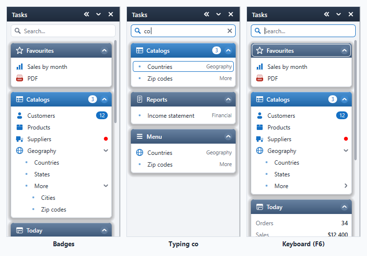
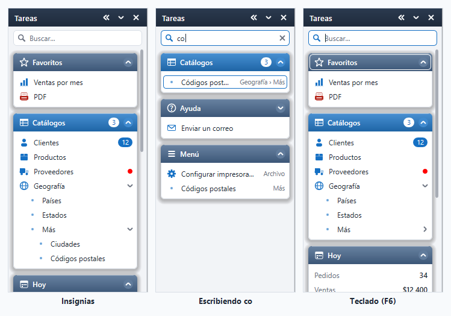
Favourites, info cards, the icon rail and auto-hide
Favourites and Recent. Right-click any action and pick Add to favourites: a Favourites
group appears at the top. Every action run goes to the top of a Recent group (closed by default) that
keeps the last RecentMax (5). Their rows stand for the real items — same icon, same badge, same
enabled state — and a click runs the real item, so its tag, action and embed are the ones that run. Right-click
a favourite to remove it, or Recent to clear it. Both are saved in the INI (by tag, or by the path of texts),
and come back with LoadState. In code: AddFavorite(id), RemoveFavorite(id),
IsFavorite(id), ClearRecent(); turn them off with Favorites = 0 /
RecentMax = 0.
Info cards are rows that show something: AddInfo(group, 'Orders', '34') (label and value),
AddProgress(group, 'Monthly target', 64) (a bar), AddChart(group, 'Sales', '12,15,9,18',
MTP:Bars) (bars or MTP:Line, the last value as the headline). Change them with
SetValue, SetProgress, SetSeries; SetClickable(id) makes one
raise a click. In the template they are item kinds Info, Progress and Chart with a
Value expression, re-evaluated with the conditions — at open and every time the mouse comes in —
so a card reading RECORDS(Orders) is fresh whenever someone looks.
The icon rail. The « button in the title, the panel's menu, SetRail(1) or the template's
Start collapsed to icons shrink the docked panel to a 44-pixel strip of group icons (a dot where a
group or an item in it has a badge). Pointing at an icon slides that group out beside the strip, fully open;
it goes when the mouse is on neither. The » button brings the whole panel back; so does the keyboard key.
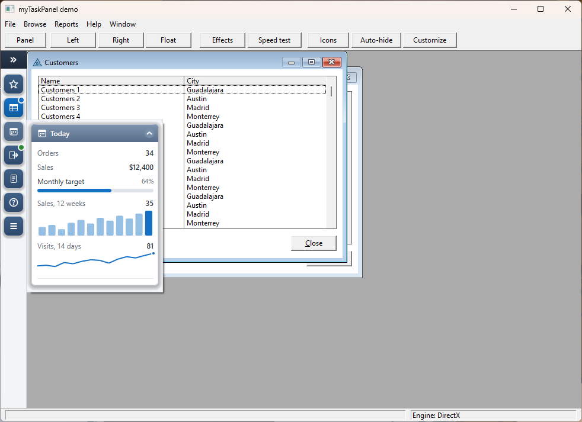
Auto-hide. SetAutoHide(1), the panel's menu or the template's check tucks the docked panel
into a 6-pixel strip at the edge — the host gives up only that. Touching the strip slides the panel out
over the host, without moving anything; it slides back when the mouse leaves (not while it has the
keyboard or a menu is open). Rail and auto-hide are each other's alternative: turning one on turns the other
off. Both are remembered in the INI.
Favoritos, tarjetas de datos, el riel de iconos y ocultar automáticamente
Favoritos y Recientes. Clic derecho en cualquier acción y Agregar a favoritos: aparece un grupo
Favoritos arriba. Cada acción ejecutada pasa al principio de un grupo Recientes (cerrado por
omisión) que guarda las últimas RecentMax (5). Sus filas representan a los elementos reales — mismo
icono, misma insignia, mismo estado — y un clic ejecuta el elemento real, así corren su etiqueta, su acción y su
embed. Clic derecho en un favorito para quitarlo, o en Recientes para borrarlos. Los dos se guardan en el INI (por
etiqueta, o por la ruta de textos) y vuelven con LoadState. Por código: AddFavorite(id),
RemoveFavorite(id), IsFavorite(id), ClearRecent(); se desactivan con
Favorites = 0 / RecentMax = 0.
Las tarjetas de datos son filas que muestran algo: AddInfo(grupo, 'Pedidos', '34') (rótulo y
valor), AddProgress(grupo, 'Meta del mes', 64) (una barra), AddChart(grupo, 'Ventas',
'12,15,9,18', MTP:Bars) (barras o MTP:Line, el último valor como titular). Se cambian con
SetValue, SetProgress, SetSeries; SetClickable(id) hace que una
genere un clic. En la plantilla son los tipos de elemento Info, Progress y Chart con una
expresión Value, reevaluada con las condiciones — al abrir y cada vez que entra el ratón — así una
tarjeta que lee RECORDS(Pedidos) está al día cada vez que alguien la mira.
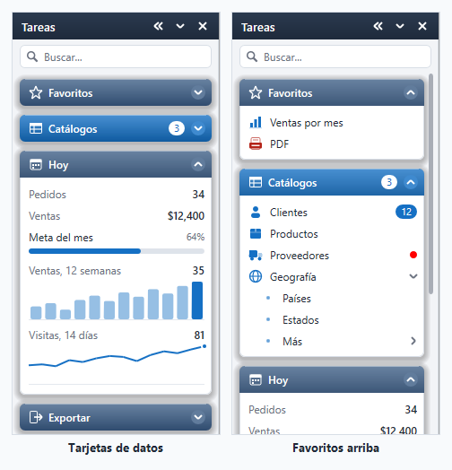
El riel de iconos. El botón « del título, el menú del panel, SetRail(1) o la opción
Start collapsed to icons reducen el panel acoplado a una franja de 44 píxeles con los iconos de los grupos
(un punto donde el grupo o algo en él tiene insignia). Al apuntar a un icono, ese grupo se despliega al lado,
completamente abierto; se va cuando el ratón no está en ninguno de los dos. El botón » devuelve el panel
completo; la tecla del teclado también.
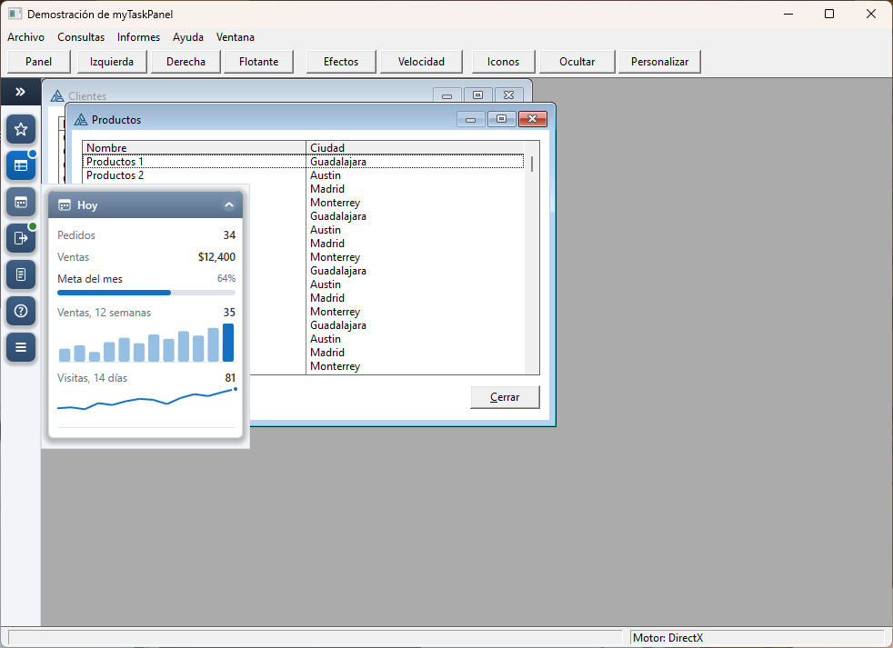
Ocultar automáticamente. SetAutoHide(1), el menú del panel o la opción de la plantilla
guardan el panel acoplado en una franja de 6 píxeles en el borde — la ventana cede solo eso. Al tocar la franja
el panel se desliza sobre la ventana, sin mover nada; vuelve a guardarse cuando sale el ratón (no mientras
tiene el teclado o un menú abierto). El riel y ocultar automáticamente se excluyen: activar uno apaga el otro.
Los dos se recuerdan en el INI.
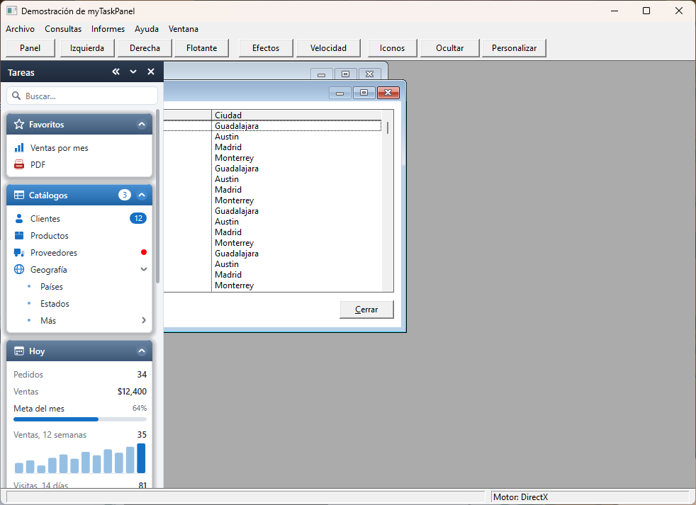
Customize, reorder, most used, hover buttons, file drops, description cards
Customize. Right-click and pick Customize… (or Customize()): the panel itself goes
into an edit mode. Every row and group gets an eye; a click hides it (it stays faded so it can come back), the
bar at the top has Reset and Done. Hide this on the right-click menu does one item at once.
The user's choices are kept per user in the INI and sit on top of the program's own SetHidden —
a user can hide, never show what the program (or a Show only when) hid. In code: HideItem(id),
ResetCustom(), IsCustomizing().
Reorder. Drag a group header up or down — an accent line shows where it lands — or drag a favourite
within Favourites. A short press is still a click; it becomes a drag after 6 pixels. Kept in the INI;
MoveGroup(id, beforeId) does it in code, Reset puts the program's order back.
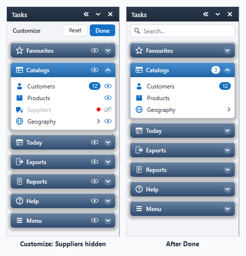
Most used. Every run is counted; a Most used group (closed by default) shows the
MostMax (5) run most, twice at least. Right-click it to start the counts again. The counts are in
the INI too — Recent is what you did last, Most used what you do every day.
Hover buttons. AddAction(id, 'plus', 'cust_new', 'New customer') adds a small button to
the end of a row, shown while the mouse is on it: one row, several actions. A click arrives through
MTP:Event like an item's, with ClickTag the button's tag, ClickId the row's
item and ClickAct non-zero. In the template: Extras → Hover buttons, each with an icon, a
tip, a tag and an action of its own (and an embed point).
File drops. SetDropTarget(id) (template: Accept files dropped on it) lets files
dragged from Explorer land on that row. They arrive as MTP:Drop; NextDrop() fills
DropTag, DropText, DropCount and DropFiles
('C:\a.txt|C:\b.pdf'), DropFile(n) gives one. Windows does not let Explorer drop on
a program running as administrator.
Description cards. An item with a Tip (SetTip, template Extras →
Tooltip) shows a card after a 0.6-second pause: its name, the description wrapped over several lines, its
shortcut and where it lives. A hover button's tip shows the same way. The mouse goes through the card;
ShowTips = 0 turns them off.
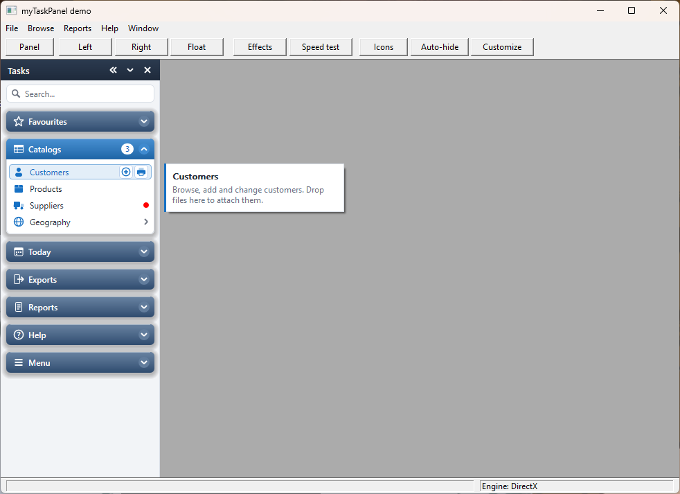
Personalizar, reordenar, más usados, botones al pasar, soltar archivos, fichas
Personalizar. Clic derecho y Personalizar… (o Customize()): el panel mismo pasa a
un modo de edición. Cada fila y cada grupo tienen un ojo; un clic lo oculta (queda atenuado para poder volver),
la barra de arriba tiene Reiniciar y Listo. Ocultar esto en el menú del clic derecho oculta
uno de una vez. Lo que elige el usuario se guarda por usuario en el INI y va encima del SetHidden del
programa — el usuario puede ocultar, nunca mostrar lo que el programa (o un Show only when) ocultó. Por
código: HideItem(id), ResetCustom(), IsCustomizing().
Reordenar. Arrastre un encabezado de grupo hacia arriba o abajo — una línea de acento marca dónde cae —
o un favorito dentro de Favoritos. Una pulsación corta sigue siendo un clic; se vuelve arrastre después de 6
píxeles. Se guarda en el INI; MoveGroup(id, antesDe) lo hace por código, Reiniciar devuelve el
orden del programa.
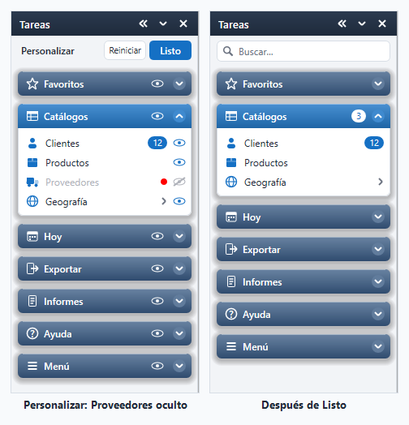
Más usados. Cada ejecución se cuenta; un grupo Más usados (cerrado por omisión) muestra los
MostMax (5) más ejecutados, dos veces como mínimo. Clic derecho para empezar a contar de nuevo. Las
cuentas también van al INI — Recientes es lo último que hizo, Más usados lo que hace todos los días.
Botones al pasar. AddAction(id, 'plus', 'cli_nuevo', 'Nuevo cliente') agrega un botón pequeño al
final de una fila, visible mientras el ratón está encima: una fila, varias acciones. El clic llega por
MTP:Event como el de un elemento, con ClickTag la etiqueta del botón, ClickId el
elemento de la fila y ClickAct distinto de cero. En la plantilla: Extras → Hover buttons, cada
uno con icono, consejo, etiqueta y acción propios (y un punto de embed).
Soltar archivos. SetDropTarget(id) (plantilla: Accept files dropped on it) deja que los
archivos arrastrados desde el Explorador caigan en esa fila. Llegan como MTP:Drop; NextDrop()
llena DropTag, DropText, DropCount y DropFiles
('C:\a.txt|C:\b.pdf'), DropFile(n) da uno. Windows no deja que el Explorador suelte
archivos en un programa que corre como administrador.
Fichas de descripción. Un elemento con Tip (SetTip, plantilla Extras →
Tooltip) muestra una ficha tras una pausa de 0,6 segundos: su nombre, la descripción en varias líneas, su tecla
y dónde vive. El consejo de un botón al pasar se muestra igual. El ratón atraviesa la ficha;
ShowTips = 0 las apaga.
The class
MyTaskPanelClass owns four queues — Items (what you added), Rows (the layout,
rebuilt every paint), Kids (the host child windows it narrows), Clicks (waiting for
NextClick) — two windows it creates (the docked child and the floating tool window), and its GDI
fonts and icons. It borrows the host window (&WINDOW), its handle and thread, and the menu
ITEMs it copied.
MTPItemQ, field by field
| Field | Meaning |
|---|---|
Id · Parent | the id AddGroup/AddItem returned; 0 = a group |
Kind | MTP:Group, MTP:Item, MTP:Separator, MTP:Label |
Text · Shortcut · Tip | as shown (accelerator & removed, && kept as one); shortcut column; tip (stored only — see quirks) |
Glyph · IconFile · HIcon | built-in icon name, or an icon file and its loaded handle |
Tag | your key for the item; what the generated CASE tests |
Feq · Mirrored | non-zero: a click POSTs EVENT:Accepted to that control; copied from the MENUBAR |
Expanded · Reveal | open or closed; how far open while animating (0–1) |
Enabled · Hidden · Checked · Bold · Special | state; Special = accent-coloured group header |
La clase
MyTaskPanelClass es dueña de cuatro colas — Items (lo que agregó), Rows (el diseño,
rehecho en cada pintado), Kids (las ventanas hijas de la ventana anfitriona que angosta),
Clicks (esperando a NextClick) — de dos ventanas que crea (la hija acoplada y la ventana
flotante) y de sus fuentes e iconos GDI. Toma prestados la ventana anfitriona (&WINDOW), su
handle y su hilo, y los ITEM de menú que copió.
MTPItemQ, campo por campo
| Campo | Significado |
|---|---|
Id · Parent | el id que devolvió AddGroup/AddItem; 0 = un grupo |
Kind | MTP:Group, MTP:Item, MTP:Separator, MTP:Label |
Text · Shortcut · Tip | como se ve (sin el & de acelerador, && queda como uno); columna de tecla; ayuda (solo se guarda — ver rarezas) |
Glyph · IconFile · HIcon | nombre de icono incluido, o un archivo de icono y su handle cargado |
Tag | su clave para el elemento; lo que prueba el CASE generado |
Feq · Mirrored | distinto de 0: un clic envía EVENT:Accepted a ese control; copiado del MENUBAR |
Expanded · Reveal | abierto o cerrado; cuánto está abierto durante la animación (0–1) |
Enabled · Hidden · Checked · Bold · Special | estado; Special = encabezado con el color de acento |
Life cycle
Init(window, engine)— after the window is open (it needsPROP:Handle). Finds out whether the host is a frame (it has anMDIClient) and reads the screen DPI.AddGroup/AddItem/MirrorMenu— in any order; nothing is drawn yet.LoadState()— after the groups exist (it restores their open/closed state by tag or caption) and beforeShowPanel(it restores the dock side and width).ShowPanel()— creates the two windows, subclasses the host's children, takes the room.Kill()— before the window closes: saves the state, unhooks, gives the room back, puts a detached menu back. The template calls it inThisWindow.Killat priority 4400, ahead ofPARENT.Kill. Calling it twice is harmless, and the destructor calls it if you forget.
The template does 1–4 in a routine mtpBuild:TaskPanel run on EVENT:OpenWindow, from
TakeEvent at priority 2000 — ahead of ABC's own event loop at 2500.
Ciclo de vida
Init(ventana, motor)— con la ventana ya abierta (necesitaPROP:Handle). Averigua si la anfitriona es un marco (tieneMDIClient) y lee los DPI de la pantalla.AddGroup/AddItem/MirrorMenu— en cualquier orden; todavía no se dibuja.LoadState()— después de crear los grupos (restaura si estaban abiertos, por etiqueta o título) y antes deShowPanel(restaura el lado y el ancho).ShowPanel()— crea las dos ventanas, subclasifica las hijas de la anfitriona, toma el espacio.Kill()— antes de que cierre la ventana: guarda el estado, desengancha, devuelve el espacio, repone un menú quitado. La plantilla lo llama enThisWindow.Killcon prioridad 4400, antes dePARENT.Kill. Llamarlo dos veces no hace daño, y el destructor lo llama si se olvida.
La plantilla hace 1–4 en una rutina mtpBuild:TaskPanel que corre en EVENT:OpenWindow,
desde TakeEvent con prioridad 2000 — antes del bucle de eventos de ABC en 2500.
One click, end to end
- Windows sends
WM_LBUTTONDOWNto the panel.MTP_WndProc— a Clarion procedure withPASCALthat Windows calls directly, like Clarion's ownsmartzoom.clw— finds the object in aTHREADqueue keyed by window handle and callsWndMsg. HitTestwalksRows(header, item, scroll thumb, splitter, title buttons) and remembers the row as pressed.- On
WM_LBUTTONUPover the same row: a group header opens or closes; an item with children opens its submenu; any other enabled item is queued andPOST(MTP:Event,,thread)wakes the host's ACCEPT loop. Nothing of yours runs inside the callback. - The generated code sees
MTP:Eventand loopsNextClick(). An item with aFeqis turned intoPOST(EVENT:Accepted, Feq)and skipped; any other fillsClickId/ClickTag/ClickText, calls the virtualTakeItem, and returns 1 — theCASE ClickTagruns the action and the item's embed.
Un clic, de principio a fin
- Windows envía
WM_LBUTTONDOWNal panel.MTP_WndProc— un procedimiento Clarion conPASCALque Windows llama directamente, como el propiosmartzoom.clwde Clarion — busca el objeto en una colaTHREADpor handle de ventana y llama aWndMsg. HitTestrecorreRows(encabezado, elemento, barra, borde, botones del título) y recuerda la fila como pulsada.- En
WM_LBUTTONUPsobre la misma fila: un encabezado abre o cierra su grupo; un elemento con hijos abre su submenú; cualquier otro elemento habilitado se encola yPOST(MTP:Event,,hilo)despierta el bucle ACCEPT de la anfitriona. Nada suyo corre dentro del callback. - El código generado ve
MTP:Eventy repiteNextClick(). Un elemento conFeqse convierte enPOST(EVENT:Accepted, Feq)y se salta; cualquier otro llenaClickId/ClickTag/ClickText, llama al virtualTakeItemy devuelve 1 — elCASE ClickTagcorre la acción y el embed del elemento.
Making room on the host
A Clarion frame lays its MDIClient out against the full client area, under the toolbar and above
the painted status bar; a window does the same with its ClaChildClient, which holds every control.
The panel subclasses those host children (MTP_KidProc) and corrects each
WM_WINDOWPOSCHANGING after the host's own procedure has answered: the rect the host asked for
is remembered, and a filler (taller than 60% of the client area) loses the panel's width on the docked
side. A band — the toolbar — is left alone. The panel then sits in the strip, with the filler's top and bottom.
SetWindowPos reaches the hook with SWP_NOMOVE|SWP_NOSIZE added by
Clarion's MDI client procedure, which normally means "only a show or z-order change". So while
ApplyLayout replays (Replaying = 1) those flags are overridden; at all other times they
are respected.On Kill the original window procedures are restored and the remembered rects replayed, so the host
looks exactly as it did. If something subclassed a host child after the panel did, the panel cannot step out of
the chain; it stays in as a pass-through that no longer refers to the object.
Hacer lugar en la ventana
Un marco Clarion acomoda su MDIClient contra toda el área cliente, bajo la barra de herramientas y sobre
la barra de estado pintada; una ventana hace lo mismo con su ClaChildClient, que contiene todos los
controles. El panel subclasifica esas hijas (MTP_KidProc) y corrige cada
WM_WINDOWPOSCHANGING después de que respondió el procedimiento de la anfitriona: recuerda el
rectángulo pedido, y a un relleno (más alto que el 60% del área) le quita el ancho del panel del lado acoplado.
Una banda — la barra de herramientas — no se toca. El panel ocupa la franja, con el alto del relleno.
SetWindowPos, llega al gancho con SWP_NOMOVE|SWP_NOSIZE
agregados por el procedimiento del cliente MDI de Clarion, que normalmente significa "solo mostrar u ordenar". Así
que mientras ApplyLayout repite (Replaying = 1) esos indicadores se ignoran; el resto del
tiempo se respetan.En Kill se restauran los procedimientos originales y se repiten los rectángulos recordados: la anfitriona
queda exactamente como estaba. Si algo subclasificó una hija después del panel, el panel no puede salir de la cadena;
queda como paso directo que ya no usa el objeto.
Hand-coding it
A mano
INCLUDE('MyTaskPanel.INC'),ONCE ! project: _MyTaskPanelDllMode_=>0;_MyTaskPanelLinkMode_=>1 ! (+ _MTP_D2D_=>1 for the DirectX engine) TP MyTaskPanelClass g LONG sub LONG CODE OPEN(AppFrame) ACCEPT CASE EVENT() OF EVENT:OpenWindow TP.Init(AppFrame, MTP:DirectX) TP.Title = 'Tasks' g = TP.AddGroup('Catalogs', 'table', 1, 1) ! open, accent header TP.AddItem(g, 'Customers', 'user', 'cust') sub = TP.AddItem(g, 'Geography', 'globe') ! children make it a submenu TP.AddItem(sub, 'Countries', , 'countries') TP.AddItem(g, 'Products', 'box', , ?BrProducts) ! presses that menu item TP.MirrorMenu(0, 'Window', 1) ! the MENUBAR, in one group TP.IniFile = 'MyApp.ini' TP.LoadState() TP.ShowPanel() OF MTP:Event LOOP WHILE TP.NextClick() CASE TP.ClickTag OF 'cust' ; START(BrowseCustomers, 25000) OF 'countries' ; START(BrowseCountries, 25000) END END END END TP.Kill()
Or derive and override TakeItem(id, tag), which NextClick calls for every
click it returns.
O derive la clase y redefina TakeItem(id, tag), que NextClick llama por cada
clic que devuelve.
Method reference
Referencia de métodos
| Method | When you would call it | Cuándo llamarlo |
|---|---|---|
| Life cycleCiclo de vida | ||
Init(WINDOW host, BYTE engine=MTP:Clarion),BYTE | once, after OPEN; returns 0 if the window has no handle | una vez, después de OPEN; devuelve 0 si la ventana no tiene handle |
ShowPanel · HidePanel · TogglePanel · IsVisible() | show it (the first call creates the windows), hide it, flip it | mostrarlo (la primera vez crea las ventanas), ocultarlo, alternarlo |
Dock(BYTE side) | MTP:Left, MTP:Right, MTP:Float | MTP:Left, MTP:Right, MTP:Float |
SetWidth(LONG px) · Refresh | docked width (clamped to MinWidth/MaxWidth); re-lay out after changing properties | ancho acoplado (limitado por MinWidth/MaxWidth); rehacer el diseño tras cambiar propiedades |
Kill | before the window closes | antes de cerrar la ventana |
| BuildingArmar | ||
AddGroup(text, <glyph>, expanded=1, special=0),LONG | a card; returns its id | una tarjeta; devuelve su id |
AddItem(pid, text, <glyph>, <tag>, feq=0),LONG | an item in a group or in another item's submenu; feq makes it press that control | un elemento en un grupo o en el submenú de otro; feq hace que pulse ese control |
AddSeparator(pid) · AddLabel(pid, text) | a rule; a small heading | una línea; un rótulo |
MirrorMenu(hideMenu=0, <skip>, oneGroup=0),LONG | copy the host's MENUBAR; skip = 'Window|Help'; returns the number of menus copied | copiar el MENUBAR; skip = 'Window|Help'; devuelve cuántos menús copió |
SyncMirror | re-read enabled/checked from the menu now (it also runs when the mouse comes in) | releer habilitado/marcado del menú ya (también corre al entrar el mouse) |
DeleteItem(id) · ClearAll | remove one (with its children) or everything | quitar uno (con sus hijos) o todo |
| ItemsElementos | ||
SetText · SetGlyph · SetIcon · SetShortcut · SetTip · SetFeq | change one property of an item | cambiar una propiedad de un elemento |
SetEnabled · SetHidden · SetChecked · SetBold · SetSpecial | change its state | cambiar su estado |
Expand(id, on=1) · ExpandAll(on=1) · IsExpanded(id) | open/close a group or submenu (animated when visible) | abrir/cerrar un grupo o submenú (animado si está visible) |
SetBadge(id, txt, clr=-1) · GetBadge(id) | a pill on the row or header: a count, a word, '*' = a dot; '' removes; -1 = the accent | una píldora en la fila o el encabezado: un número, una palabra, '*' = un punto; '' la quita; -1 = el acento |
Focus() · HasKeyboard(),BYTE | give the panel the keyboard; whether it has it | darle el teclado al panel; si lo tiene |
SetSearch(txt) · GetSearch(),STRING · ShowSearch | filter as if typed ('' clears); the search box on/off | filtrar como si se escribiera ('' borra); el cuadro de búsqueda sí/no |
AddInfo(pid, label, value, <tag>) · AddProgress(pid, label, pct, <tag>) · AddChart(pid, label, series, style=MTP:Bars, <tag>) | info cards; return their id | tarjetas de datos; devuelven su id |
SetValue(id, txt) · SetProgress(id, pct) · SetSeries(id, '1,2,3') · SetClickable(id, on=1) | change a card; make it raise a click | cambiar una tarjeta; hacer que genere un clic |
AddFavorite(id) · RemoveFavorite(id) · IsFavorite(id) · ClearRecent() · Favorites · RecentMax | the Favourites and Recent groups | los grupos Favoritos y Recientes |
SetRail(on) · SetAutoHide(on) · Rail · AutoHide | the icon rail; tuck into the edge (set the properties before ShowPanel) | el riel de iconos; guardarse en el borde (las propiedades, antes de ShowPanel) |
Customize(on=1) · IsCustomizing() · HideItem(id, on=1) · ResetCustom() · MoveGroup(id, beforeId) | the user's own panel (kept in the INI) | el panel propio del usuario (guardado en el INI) |
MostMax · ShowTips · SetTip(id, txt) | Most used size; description cards on/off; an item's description | tamaño de Más usados; fichas sí/no; la descripción de un elemento |
AddAction(id, glyph, tag, <tip>) · ClearActions(id) · ClickAct | hover buttons; on MTP:Event, ClickAct <> 0 means a button was clicked | botones al pasar; en MTP:Event, ClickAct <> 0 indica un botón |
SetDropTarget(id, on=1) · MTP:Drop · NextDrop() · DropTag · DropFiles · DropCount · DropFile(n) | files dropped from Explorer on an item | archivos soltados desde el Explorador en un elemento |
MTP:Check | event posted when the mouse comes in or the panel takes the keyboard: re-check conditions, refresh badges | evento enviado cuando entra el ratón o el panel toma el teclado: reevaluar condiciones, actualizar insignias |
FindTag(tag) · FindText(text, pid=-1) · ItemCount() | look an item up | buscar un elemento |
| ClicksClics | ||
NextClick(),BYTE | on MTP:Event, in a loop; fills ClickId, ClickTag, ClickText | en MTP:Event, en un bucle; llena ClickId, ClickTag, ClickText |
TakeItem(id, tag),VIRTUAL | override instead of the CASE | redefinir en lugar del CASE |
Click(id) | as if the user had clicked it | como si el usuario lo hubiera pulsado |
| Looks and helpersAspecto y ayudas | ||
SetTheme(theme) · SetAccent(color) · SetLanguage('ES') | MTP:Slate … MTP:Olive (1..18); accent; the panel's own menu | MTP:Slate … MTP:Olive (1..18); acento; el menú propio del panel |
EngineInUse(),BYTE | which engine is really drawing | qué motor dibuja de verdad |
Benchmark(engine, frames=200, effects=1),REAL | milliseconds per frame for this panel with that engine, off screen; -1 if the engine is not compiled in | milisegundos por cuadro de este panel con ese motor, fuera de pantalla; -1 si el motor no está compilado |
Effects · FloatOpacity · ShowEngine | DirectX shadows/glass/fades (1) · a floating panel's idle opacity, % (88) · the engine badge (0) | sombras/vidrio/desvanecidos de DirectX (1) · opacidad en reposo del panel flotante, % (88) · la insignia del motor (0) |
GuessGlyph(text),STRING | an icon name from a caption | un nombre de icono a partir de un texto |
OpenUrl(url) · MdiCommand(cmd) | ShellExecute "open"; MTP:TileH/TileV/Cascade/Arrange | ShellExecute "open"; MTP:TileH/TileV/Cascade/Arrange |
SaveState · LoadState | with IniFile/IniSection set; Kill saves by itself | con IniFile/IniSection; Kill guarda solo |
Properties (set before ShowPanel, or call Refresh):
Title DockSide PanelWidth MinWidth MaxWidth SubStyle ShowShortcuts Accordion Animate AllowFloat AllowDock
AllowClose AllowResize GrowHost FontName FontSize ItemHeight HeaderHeight Radius IniFile IniSection AutoGlyphs
and the colours ClrBack ClrTitle1/2 ClrTitleText ClrHead1/2 ClrHeadText ClrSpecial1/2 ClrSpecialText ClrCard
ClrCardLine ClrText ClrTextDim ClrHover ClrHoverLine ClrAccent ClrDisabled ClrSep.
Propiedades (antes de ShowPanel, o llame a Refresh):
Title DockSide PanelWidth MinWidth MaxWidth SubStyle ShowShortcuts Accordion Animate AllowFloat AllowDock
AllowClose AllowResize GrowHost FontName FontSize ItemHeight HeaderHeight Radius IniFile IniSection AutoGlyphs
y los colores ClrBack ClrTitle1/2 ClrTitleText ClrHead1/2 ClrHeadText ClrSpecial1/2 ClrSpecialText ClrCard
ClrCardLine ClrText ClrTextDim ClrHover ClrHoverLine ClrAccent ClrDisabled ClrSep.
Generated code & embeds
| Where | What |
|---|---|
| Procedure data | TaskPanel MyTaskPanelClass, TaskPanel:G LONG, TaskPanel:L LONG,DIM(8) |
TakeEvent, priority 2000 | OF EVENT:OpenWindow → DO mtpBuild:TaskPanel; OF MTP:Event → the NextClick loop and the CASE; OF MTP:Check → DO mtpCheck:TaskPanel; OF EVENT:AlertKey → the show/hide key and the keyboard key |
Kill, priority 4400 | TaskPanel.Kill() |
| Procedure routines | mtpBuild:TaskPanel — settings, groups, items, menu copy, LoadState, the conditions, ShowPanel; mtpCheck:TaskPanel — every Show/Enable only when |
| Global | INCLUDE('MyTaskPanel.INC'); the MYTASKPANEL class category; _MTP_D2D_ for DirectX |
| Embed | Runs |
|---|---|
| myTaskPanel - before the groups are added | in the build routine, after the settings — change properties here |
| myTaskPanel - after the groups are added, before it shows | add items in code, hide some, set icons |
| myTaskPanel - any item clicked, before its action | for every click; TaskPanel.ClickTag says which |
| myTaskPanel → group → item | after that item's action |
| myTaskPanel - an item added in code was clicked | the CASE's ELSE |
| myTaskPanel - re-check conditions | at the end of mtpCheck: at open and on every MTP:Check — refresh badges, hide or enable items added in code |
| myTaskPanel → group → item → button n | after that hover button's action |
| myTaskPanel - files dropped · → group → item → files dropped | on MTP:Drop, for any item / for that item |
Código generado y embeds
| Dónde | Qué |
|---|---|
| Datos del procedimiento | TaskPanel MyTaskPanelClass, TaskPanel:G LONG, TaskPanel:L LONG,DIM(8) |
TakeEvent, prioridad 2000 | OF EVENT:OpenWindow → DO mtpBuild:TaskPanel; OF MTP:Event → el bucle de NextClick y el CASE; OF MTP:Check → DO mtpCheck:TaskPanel; OF EVENT:AlertKey → la tecla de mostrar/ocultar y la del teclado |
Kill, prioridad 4400 | TaskPanel.Kill() |
| Rutinas del procedimiento | mtpBuild:TaskPanel — ajustes, grupos, elementos, copia del menú, LoadState, las condiciones, ShowPanel; mtpCheck:TaskPanel — cada Show/Enable only when |
| Global | INCLUDE('MyTaskPanel.INC'); la categoría de clase MYTASKPANEL; _MTP_D2D_ para DirectX |
| Embed | Corre |
|---|---|
| myTaskPanel - before the groups are added | en la rutina, después de los ajustes — cambie propiedades aquí |
| myTaskPanel - after the groups are added, before it shows | agregar elementos por código, ocultar algunos, poner iconos |
| myTaskPanel - any item clicked, before its action | en cada clic; TaskPanel.ClickTag dice cuál |
| myTaskPanel → grupo → elemento | después de la acción de ese elemento |
| myTaskPanel - an item added in code was clicked | el ELSE del CASE |
| myTaskPanel - re-check conditions | al final de mtpCheck: al abrir y en cada MTP:Check — actualizar insignias, ocultar o habilitar elementos agregados por código |
| myTaskPanel → grupo → elemento → button n | después de la acción de ese botón |
| myTaskPanel - files dropped · → grupo → elemento → files dropped | en MTP:Drop, para cualquier elemento / para ese |
Multi-DLL
The class is filed under the ABC category MYTASKPANEL (line 1 of the .inc), so the ABC chain writes
_MyTaskPanelDllMode_ / _MyTaskPanelLinkMode_ and the export list. By default the
application that owns the data compiles the class and the others import it. Put the global extension on
every application, with the same engine — the application that compiles the class is the one whose
_MTP_D2D_ decides.
Multi-DLL
La clase está en la categoría ABC MYTASKPANEL (línea 1 del .inc), así la cadena ABC escribe
_MyTaskPanelDllMode_ / _MyTaskPanelLinkMode_ y la lista de exportación. Por omisión la
aplicación dueña de los datos compila la clase y las demás la importan. Ponga la extensión global en todas
las aplicaciones, con el mismo motor — decide el _MTP_D2D_ de la aplicación que compila la clase.
How it was verified
| Check | Result |
|---|---|
TaskPanelDemo.exe auto and TaskPanelDemoDX.exe auto engine=dx — real Win32 messages at the panel, geometry read back with GetWindowRect | 24 / 24 on both engines: docked left (MDI client narrowed), docked right, floating (full width back), width 300, menu copied 3 levels deep with Window skipped, a real click arriving as its tag, a header click closing its group, the splitter dragged 300 → 360, the title dragged into the MDI area (floats), dropped at the right edge (docks), a copied menu row reaching ?BrCountries; the keyboard (focus taken, Home, Enter opens, Down, Left out, Left closes); a search for cou leaving 4 rows; json + Enter, posted through the ACCEPT loop, running JSON and giving the keyboard back; a Favourites row standing for CSV and clicking it raising x_csv; that click at the top of Recent; the rail 44 px with the MDI client after it and a group popped out; auto-hide tucked (the MDI client starts at the 6 px strip) and out (the panel over 294 px of it), and both back; Customize hiding Products (faded while customizing, gone after Done, back after Reset); the Exports header dragged above Catalogs; PDF run three times heading Most used; the + hover button arriving as cust_new with its row; the description card after the pause and gone with the mouse; a real HDROP of two files on Customers arriving through MTP:Drop |
… win auto — the panel on an ordinary window | 3 / 3: window grew by 190 and the form moved right by 190; floating restored both; docked right leaves the form in place |
gen\build.sh — a real ABC application imported from a TXA, generated by ClarionCL, compiled, run | clean generate, 0 compile errors; every action type, nested levels (a level-5 item clamped to 3), the copied menu, the key, a per-item embed, Show/Enable only when on three items and a group (run: one item hidden, one greyed, the group gone), Info / Progress / Chart cards with expression values (one clickable), a tooltip, a drop target and two hover buttons on Customers; Insert a record on an item and on the + button — run with insert, the item clicked itself and the MDI form opened on thread 2 with SELF.Request = InsertRecord; _MTP_D2D_ and the category pragmas present in the generated project; the layout saved beside the program |
presets\build.sh — a test copy of the template whose #ATSTART presses all twelve presets | every preset generates and compiles, including the application's browses/reports and the design-time menu copy |
Cómo se verificó
| Prueba | Resultado |
|---|---|
TaskPanelDemo.exe auto y TaskPanelDemoDX.exe auto engine=dx — mensajes Win32 reales al panel, geometría leída con GetWindowRect | 24 / 24 en los dos motores: acoplado a la izquierda (cliente MDI angostado), a la derecha, flotante (ancho completo de vuelta), ancho 300, menú copiado con 3 niveles y Window omitido, un clic real que llega como su etiqueta, un clic en el encabezado que cierra el grupo, el borde arrastrado de 300 a 360, el título arrastrado al área MDI (flota), soltado en el borde derecho (se acopla), una fila copiada del menú que llega a ?BrCountries; el teclado (toma el foco, Inicio, Enter abre, Abajo, Izquierda sale, Izquierda cierra); buscar cou deja 4 filas; json + Enter, enviados por el bucle ACCEPT, ejecutan JSON y devuelven el teclado; una fila de Favoritos que representa a CSV y al pulsarla llega x_csv; ese clic al principio de Recientes; el riel de 44 px con el cliente MDI a continuación y un grupo desplegado; ocultar automáticamente guardado (el cliente MDI empieza en la franja de 6 px) y desplegado (el panel sobre 294 px de él), y los dos de vuelta; Personalizar oculta Productos (atenuado mientras se personaliza, ausente tras Listo, de vuelta tras Reiniciar); el encabezado Exportar arrastrado sobre Catálogos; PDF ejecutado tres veces encabeza Más usados; el botón + llega como cust_new con su fila; la ficha tras la pausa y fuera con el ratón; un HDROP real de dos archivos sobre Clientes llega por MTP:Drop |
… win auto — el panel en una ventana común | 3 / 3: la ventana creció 190 y el formulario se corrió 190; flotar devolvió ambos; acoplado a la derecha el formulario queda en su lugar |
gen\build.sh — una aplicación ABC real importada de un TXA, generada con ClarionCL, compilada y ejecutada | generación limpia, 0 errores; cada tipo de acción, niveles anidados (un elemento de nivel 5 ajustado a 3), el menú copiado, la tecla, un embed por elemento, Show/Enable only when en tres elementos y un grupo (al correr: un elemento oculto, uno atenuado, el grupo ausente), tarjetas Info / Progress / Chart con valores por expresión (una pulsable), una descripción, un destino para archivos y dos botones al pasar en Clientes; Insert a record en un elemento y en el botón + — al correr con insert, el elemento se pulsó solo y el formulario MDI abrió en el hilo 2 con SELF.Request = InsertRecord; _MTP_D2D_ y los pragmas de la categoría en el proyecto generado; el diseño guardado junto al programa |
presets\build.sh — una copia de prueba de la plantilla cuyo #ATSTART pulsa los doce predefinidos | cada predefinido genera y compila, incluidos los browses/informes de la aplicación y la copia del menú en diseño |
Known quirks
| Quirk | Where | Workaround |
|---|---|---|
| Tooltips are stored but not shown | MyTaskPanel.inc MTPItemQ.Tip, SetTip | Put the detail in the caption or a label. |
| No keyboard navigation inside the panel | WndMsg handles mouse messages only | Every copied row is still on the real menu (and its KEY()); give the panel a show/hide key. |
| "Press a control" items never reach their own embed | NextClick posts and CYCLEs | By design (the control's own code runs). Use Post an event + embed if you need both. |
| A menu merged in by an MDI child is not copied | MirrorMenu reads the host's own controls | NOMERGE, or a panel on that child. |
| While an inner submenu animates open, its last row can show over its final edge for a frame | DrawRow clips per group card, not per submenu | Cosmetic; Animate = 0 removes it. |
| The mouse wheel scrolls only when the panel has the wheel | Windows sends WM_MOUSEWHEEL to the focus window unless Scroll inactive windows is on (default on Windows 10/11) | Drag the scroll thumb. |
| A bare INI name follows the current directory | IniName uses PATH() | Give IniFile a full path if the program changes folder. |
Rarezas conocidas
| Rareza | Dónde | Solución |
|---|---|---|
| Las ayudas emergentes se guardan pero no se muestran | MyTaskPanel.inc MTPItemQ.Tip, SetTip | Ponga el detalle en el texto o en un rótulo. |
| Sin navegación por teclado dentro del panel | WndMsg atiende solo el mouse | Las filas copiadas siguen en el menú real (y su KEY()); dé al panel una tecla para mostrar/ocultar. |
| Los elementos "Press a control" nunca llegan a su embed | NextClick envía y hace CYCLE | Es a propósito (corre el código del control). Use Post an event + embed si necesita ambos. |
| El menú que mezcla una ventana MDI no se copia | MirrorMenu lee los controles de la propia anfitriona | NOMERGE, o un panel en esa ventana. |
| Mientras un submenú interior se abre, su última fila puede asomar un cuadro sobre su borde final | DrawRow recorta por tarjeta de grupo, no por submenú | Estético; Animate = 0 lo elimina. |
| La rueda solo desplaza si el panel recibe la rueda | Windows envía WM_MOUSEWHEEL a la ventana con foco salvo que Desplazar ventanas inactivas esté activo (lo está por omisión en Windows 10/11) | Arrastre la barra. |
| Un nombre de INI sin carpeta sigue al directorio actual | IniName usa PATH() | Dé a IniFile una ruta completa si el programa cambia de carpeta. |
Troubleshooting
| Symptom | Cause |
|---|---|
| The new prompts do not appear | The IDE was open when the template was registered — restart it. |
| The panel draws but the MDI area does not get narrower | Something else subclassed the MDI client first and re-imposes its size; check other window templates on the frame. |
| "DirectX" chosen but the status says Clarion | _MTP_D2D_ is not in the project of the application that compiles the class (multi-DLL), or Direct2D could not start. |
| Clicking an item does nothing | Its action is Start/Call a procedure with no procedure, or Embed code only with an empty embed. |
| The layout is not remembered | Remember is off on the global, or the INI is read from another folder (see quirks). |
| Access violation before the first line (hand-coded) | The project lacks _MyTaskPanelDllMode_=>0;_MyTaskPanelLinkMode_=>1. |
| "Illegal data type: MyTaskPanelClass" | MyTaskPanel.inc/.clw saved with LF line endings — Clarion needs CRLF. |
Problemas
| Síntoma | Causa |
|---|---|
| No aparecen las opciones nuevas | El IDE estaba abierto al registrar la plantilla — reinícielo. |
| El panel se dibuja pero el área MDI no se angosta | Otra cosa subclasificó antes el cliente MDI y le impone su tamaño; revise otras plantillas de ventana del marco. |
| Eligió "DirectX" pero la barra dice Clarion | Falta _MTP_D2D_ en el proyecto de la aplicación que compila la clase (multi-DLL), o Direct2D no arrancó. |
| Pulsar un elemento no hace nada | Su acción es Start/Call a procedure sin procedimiento, o Embed code only con el embed vacío. |
| No recuerda el diseño | Remember está apagado en la global, o el INI se lee de otra carpeta (ver rarezas). |
| Violación de acceso antes de la primera línea (a mano) | Al proyecto le falta _MyTaskPanelDllMode_=>0;_MyTaskPanelLinkMode_=>1. |
| "Illegal data type: MyTaskPanelClass" | MyTaskPanel.inc/.clw guardados con fin de línea LF — Clarion necesita CRLF. |